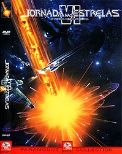
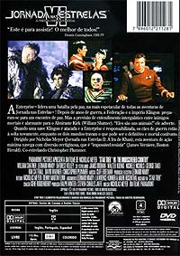
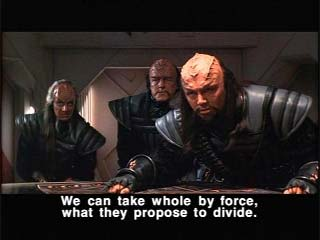
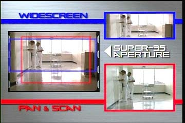
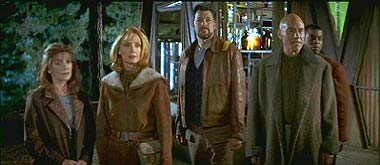
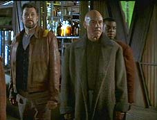
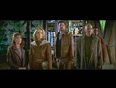
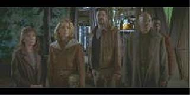

|
Por Luiz
Felipe do Vale Tavares
O
Filme
 Aps
o desastre que foi "Jornada nas Estrelas V", a
vida da tripulao da Srie Clssica no cinema parecia
ter sido enterrada de vez.
Para salvar a tripulao, nada melhor do que utilizar um tema
atual adaptado no contexto de Jornada nas Estrelas (na
poca, o fim da URSS e da Guerra Fria), trazer um diretor de
confiana (Nicholas Meyer, que tambm dirigiu o fantstico
segundo filme, "A Ira de Khan") e um roteiro de
qualidade escrito pelo prprio diretor e por Leonard Nimoy.
Aps um acidente que resultou na destruio de uma lua onde
ocorria a explorao de recursos necessrios subsistncia
do povo Klingon, estatsticas mostram que o Imprio deles est
com dos dias contados. Diante desse acontecimento, a Federao
conclui que chegou a hora de terminar anos de conflitos com os
Klingons e propor um plano de mtua cooperao.
A Enterprise enviada para uma misso diplomtica para
escoltar o Chanceler Klingon para a Terra, onde ser assinado um
tratado visando o fim da guerra. Entretanto, durante a viagem, o
Chanceler assassinado e Kirk e McCoy so acusados e condenados
priso perptua.
Desde o segundo filme no vamos interpretaes to afiadas
do elenco. Todo mundo est perfeito e tem participaes
memorveis.
Finalmente temos tambm um vilo que presta. Chang um
personagem interessante; um guerreiro Klingon a procura de mais
alguns anos de glria, consciente de que o tratado de paz pode
descaracterizar a cultura de seu povo e, alm de tudo, amante de
Shakespeare. Parece estranho essa ltima caracterstica, mas
funciona perfeitamente no filme.
A propsito, por falar em coisas estranhas, temos nesse filme
alguns dos dilogos mais esquisitos de toda a srie. Por
exemplo, vindo de Spock : "H um velho provrbio Vulcano,
somente Nixon pode ir China" (?). Outro, dessa vez vindo
de um dos Klingons: "S se pode apreciar Shakespeare aps
l-lo no original, em Klingon". Quem ser que escreveu
essas prolas?
Quanto aos efeitos especiais, nesse setor o filme no brilha e
nem desaponta. O melhor fica por conta das ondas de choque
provenientes da exploso de Praxis. Os demais efeitos so
convincentes e funcionam perfeitamente.
Pelo menos dessa vez eu no tive que esconder meu rosto de
vergonha, como acontecia nos efeitos, ou melhor, defeitos
especiais de "Jornada nas Estrelas V".
Aps longos meses de inrcia da parte da Paramount, finalmente
temos o prosseguimento do lanamento dos filmes de Jornada
em DVD aqui no Brasil.
Imagem
 Tem
prs e contras. Mas vamos comear pelos prs para evitar
desnimos antecipados. A imagem substancialmente melhor do que
a do "Generations". A
imagem mais estvel, tem melhor nitidez e melhor definio
de cores.
Agora os contras.
Assim como no DVD do "Generations",
a Paramount decidiu no gastar muito dinheiro e usou de novo uma
master antigo utilizado no LaserDisc. Como resultado temos uma
imagem muito melhor do que a da fita VHS, porm aqum dos
padres de qualidade que se pode esperar de um DVD.
Em muitas cenas, principalmente em lugares escuros, a imagem fica
muito granulada e perde a definio. O filme apresentado no
formato widescreen na proporo aproximada de 2.35:1.
Tendo sido utilizado o master para LaserDisc, a imagem
widescreen, porm no anamrfica. Por isso, mesmo quem j tem
uma televiso widescreen 16:9 vai ter que assistir com as faixas
pretas em cima e abaixo da imagem.
Um fato curioso e prejudicial na imagem desse DVD que a imagem
se encontra erguida do centro da tela, ou seja, a faixa preta
embaixo da imagem maior do que a localizada em cima. O motivo
simples. Quando esse filme foi lanado em LaserDisc, a
Paramount quis usar legendas bem grandes nas cenas de dilogo
Klingon. Mas, sendo grandes, elas invadiam o campo de imagem do
filme. Para contornar esse problema a imagem foi levantada um
pouco em relao ao centro da tela. Como esse DVD foi feito a
partir do master do LaserDisc, a "brilhante" soluo
da Paramount aqui se encontra presente e inutilmente ainda por
cima.
No caso do LaserDisc a legenda gravada junto com imagem, no
podendo ser desligada. Nos DVDs, as legendas se encontram em
arquivos grficos e o aparelho as sobrepe sobre a imagem do
filme. Como a Paramount usou legendas com fontes menores no DVD, a
imagem no precisava ter sido erguida. Vejam abaixo uma cena do
filme. Notem que as barras pretas de cima so menores que as de
baixo, e as legendas so de tamanho normal. Mesmo que a imagem
fosse centralizada, que o correto, as legendas no invadiriam
o campo de imagem.

Outro fato curioso
que quem assistiu esse filme inmeras vezes em VHS, no formato
tela-cheia, vai perceber que a imagem do DVD, mesmo sendo
widescreen, tem menos informaes embaixo e em cima da imagem e
mais informaes nas laterais. O motivo simples tambm. "Jornada
nas Estrelas VI" foi filmado no formato Super-35, onde a
imagem capturada em uma pelcula de quadros bem grandes. A
vantagem que esse formato viabiliza inmeras possibilidades de
enquadramento sem perda considervel de informaes. O filme
depois pode ser formatado para tela-cheia ou widescreen de modo
que ambos os formatos propiciem um bom enquadramento sem grandes
perdas.
Para ilustrar vejamos abaixo alguns breves exemplos com imagens.
Infelizmente no usarei nenhuma imagem comparativa com "Jornada
nas Estrelas VI" porque no tenho no momento o filme em
tela-cheia para capturar algumas cenas. Usarei em substituio
uma imagem do filme "O Exterminador do Futuro 2",
tambm filmado em Super-35; portanto, tudo o que se aplica
imagem desse filme tambm se aplica ao "Jornada nas
Estrelas VI".

No lado esquerdo vemos
a imagem da pelcula em Super-35. Note-se como enquadramento
muito grande, capturando todos os detalhes da imagem focalizada.
Sendo essa imagem muito grande, um melhor enquadramento
necessrio para evitar vazios que no se prestam ao filme. No
lado direito superior temos o enquadramento widescreen e no lado
direito inferior temos o enquadramento Pan&Scan (tela cheia).
Percebemos que a imagem widescreen captura mais informaes nas
laterais. Podemos ver o bebedouro direita, imagem essa que
est ausente na edio em tela-cheia. J na imagem em
tela-cheia temos mais informaes encima e embaixo, tanto que
podemos ver o lmpada no teto e o reflexo da cadeira no cho; na
edio em widescreen elas no aparecem.
Ressalte-se que esses enquadramentos s so possveis se o
filme for filmado em Super-35; e so poucos os filmados nesse
padro. A maioria filmado em 35mm padro e, nesse caso, a
imagem em tela-cheia s apresenta perdas com relao imagem
widescreen.
Alguns diretores, como James Cameron, s usavam o formato
Super-35, pois sabiam que aps a exibio nos cinemas o filme
seria visto para sempre apenas na televiso. Para evitar que a
imagem ficasse prejudicada na converso para o formato da TV,
eles usavam o formato Super-35 para criar a imagem em tela-cheia
sem perda de informaes. Hoje em dia o formato Super-35 no
mais usado pelo motivo de que os filmes assistidos em casa em
widescreen se tornaram a regra (ao menos para DVD), enquanto que
os em tela-cheia/Pan&San se tornaram a exceo. Daqui a
alguns anos, quando as TVs widescreen dominarem os mercados, o
formato Pan&Scan cessar de existir.
Vejamos abaixo uma amostra de "Jornada
nas Estrelas: Primeiro Contato", filmado em simples
35mm, onde vemos claramente a perda de informaes na converso
para tela-cheia e os benefcios do formato widescreen.
Cinema:

Essa a imagem original filmada em 35mm para exibio no
cinema.
Tela-Cheia (Pan&Scan):
 Para
que a imagem seja acomodada na TV, as laterais tm de ser
cortadas. A imagem preenche a totalidade da tela da TV, mas
perde-se muito da imagem original. Normalmente a cena
centralizada no ponto mais importante; nesse caso a imagem
centraliza-se em Picard, pois ele quem est falando. A Dra.
Crusher e Troi, que j aparecem pouco no filme, aparecem ainda
menos na edio em tela cheia.
Widescreen em uma televiso convencional:
 A
imagem original projetada para o cinema integralmente
preservada, porm a imagem no ocupar a totalidade da tela da
TV convencional. Faixas pretas ocuparo a tela em cima e abaixo
da imagem, to somente porque no h imagem alguma a ser
mostrada. A imagem que vemos aqui a 100% completa, igual a que
foi filmada e igual que foi exibida nos cinemas.
Widescreen em uma televiso widescreen (16x9):

Utilizando uma
televiso widescreen 16x9 e o filme em DVD no formato widescreen
anamrfico, a imagem ocupar quase a totalidade da tela, apenas
com pequenas faixas pretas em cima e abaixo da imagem. o
padro das HDTV (TV de alta definio) que chegaro ao mercado
mundial em 2003/2004.
Som
Poucas pessoas sabem, mas "Jornada nas Estrelas VI"
foi o primeiro filme a utilizar o sistema de som Dolby Digital,
onde o udio composto por cinco canais independentes criando
um ambiente sonoro tridimensional.
Na poca da estria, esse filme foi exibido com o novo sistema
de som em 3 ou 4 cinemas americanos que j tinham prottipos do
equipamento necessrio. Foi, portanto, um experimento na poca.
O sistema de som Dolby Digital s foi utilizado em grande
circuito um ano depois, no filme "Batman: O Retorno".
Muitos entusiastas em home theater alegam que "Jurassic
Park" foi o primeiro filme exibido com som digital nos
cinemas. Essa afirmao errnea, pois "Jurassic
Park" foi o primeiro filme a ser exibido com som DTS, que
tambm um sistema de som tridimensional, porm de qualidade um
pouco superior ao Dolby Digital. O pioneiro em som digital foi
mesmo "Jornada nas Estrelas VI".
O udio desse DVD o mesmo utilizado no experimento de 1991 e
absolutamente fantstico. incrvel como um excelente
sistema de udio d nova vida a um filme ao qual j assistimos
inmeras vezes em VHS. J no incio temos a trilha sonora
bombtisca fazendo a sala tremer e logo em seguida, com a
exploso de Praxis, a casa quase cai. O efeito sonoro das ondas
de choque atravessando a sala de arrepiar.
As legendas esto disponveis em ingls, portugus e espanhol.
Extras
Apenas temos dois trailers como extras. O primeiro, um mero
"teaser", maravilhoso. Mostra vrias cenas da Srie
Clssica e dos filmes anteriores sendo projetadas no casco
externo da Enterprise.
Ficha
Tcnica
Extras:
Menu interativo, Seleo de Cena, dois trailers de cinema
Vdeo:
Widescreen (2,35:1)
udio:
Ingls (Dolby Digital 5.1 Surround)
Legendas:
Ingls, Portugus e Espanhol
Ano de produo:
1991
Durao:
113 minutos
Data de Lanamento no Brasil (Regio 4)
22/05/2002
|